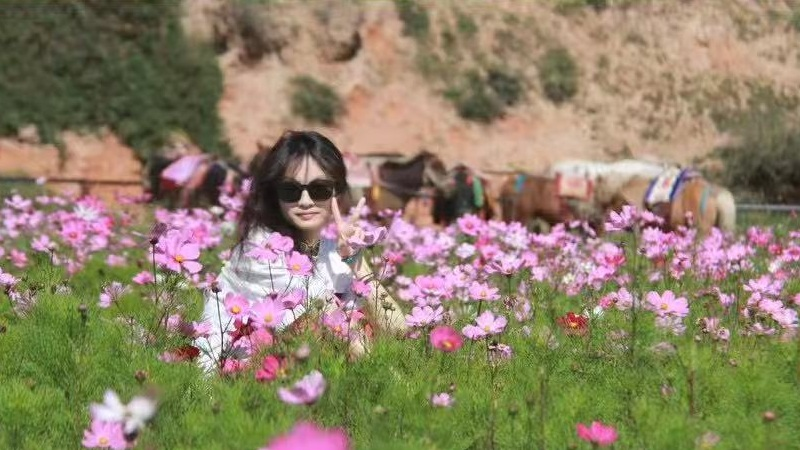

·椰椰🥥の个人介绍
你好呀！我是邓晓畅，一个永远活力满格的天蝎座ENFP✨。热爱生活，喜欢用音乐和故事填满日常，相信快乐是可以传染的～ 🎵 **音乐是我的氧气** 耳机不离身，歌单从周杰伦的复古旋律到乐队的炸裂现场无缝切换。最近单曲循环告五人的《给你一瓶魔法药水》，偶尔也会在深夜用一首《晴天》治愈自己。 📺 **追剧狂魔，快乐宅** 韩剧、动漫、国产剧来者不拒！《请回答1988》刷了N遍依然会哭，《鬼灭之刃》燃到跺脚，最近在追《眼泪女王》（求不剧透哈哈）。 🌍 **世界那么大，我要去看看** 旅行是充电的最好方式——喜欢在海边发呆，在山顶等日出，在陌生城市迷路时和当地人唠嗑。下一站想去冰岛追极光！ 💡 **ENFP的日常** 三分钟热度？那是探索精神！ 话多能量高？这叫社交牛杂症！ 偶尔emo但自愈超快，毕竟“明天又是新的一天”～ **很高兴遇见你！** 希望我的小宇宙能给你带来一点点阳光 ☀️ （快来安利我你的宝藏歌单和剧吧！）